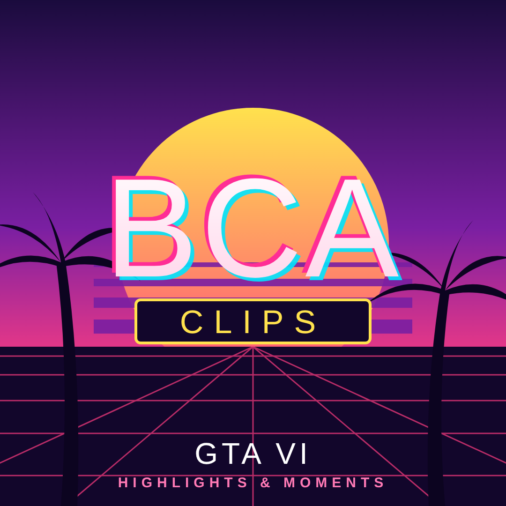

<title>BCA Clips Logo</title>
<meta name="claude:viewport-fit-sides" content="cover">
<style>
:root{--bg:#f6f2f7;--fg:#1d1030;--muted:#6b5a80;--accent:#d6247a;--line:#ded3e6}
@media (prefers-color-scheme: dark){:root:not([data-theme="light"]){--bg:#12062b;--fg:#f6eefc;--muted:#b9a5d3;--accent:#ff5aa5;--line:#2e1b55;color-scheme:dark}}
:root[data-theme="dark"]{--bg:#12062b;--fg:#f6eefc;--muted:#b9a5d3;--accent:#ff5aa5;--line:#2e1b55;color-scheme:dark}
body{background:var(--bg);color:var(--fg);font-family:Inter,system-ui,sans-serif;padding-block:32px;padding-left:max(16px,env(safe-area-inset-left,0px));padding-right:max(16px,env(safe-area-inset-right,0px))}
main{max-width:520px;margin:0 auto;display:flex;flex-direction:column;gap:20px}
h1{font-size:1.4rem;margin:0}
p{margin:0;color:var(--muted);line-height:1.5}
img{width:100%;height:auto;display:block;border-radius:12px;border:1px solid var(--line)}
.row{display:flex;gap:12px;flex-wrap:wrap}
a.btn{background:var(--accent);color:#fff;text-decoration:none;font-weight:600;padding:12px 18px;border-radius:8px}
.circle{width:96px;height:96px;border-radius:50%;object-fit:cover;border:1px solid var(--line)}
.prev{display:flex;gap:14px;align-items:center}
</style>
<main>
<h1>Foto profilo @bcaclips</h1>

<div class="row"><a class="btn" href="bcaclips_profilo.png" target="_blank">Apri immagine intera</a></div>
<p>Per salvarla: tieni premuto sull'immagine (telefono) o clic destro, "Salva immagine con nome" (computer). 1080x1080 px.</p>
<div class="prev"><p>Così appare nel cerchio di Instagram.</p></div>
</main>
